RED MASS VAMPIRE OS - English Field Guide
M-VAVE FM1 | v0.5.1-alpha | FM-1_906
256 curated presets, expanded Song Mode and twelve OS upgrades.
RED MASS v0.5 update
The interface now uses a red canvas, black control band, bold track numbers, a live waveform and a six-track selector. Pink marks the active control; grey, white and black provide secondary states. The selected track is visible on HOME. The MIXER shows all six tracks. LARGE enlarges values inside the bottom control band while retaining the full graph.
Tracks 1–5 are instruments; track 6 owns the full 16-pad drum grid. MENU > GROOVE > LAYOUT offers 5 + 1 or FLEX. There are still eight shared sounding voices, 32 editable user slots, four saved project sources and 32 Song Mode rows.
Loading a four-track project moves its fourth track to track 6 only when that track is DRUM or SMPKIT. Steps, ghost/accent hits, automation, MIDI routing, scenes, macros, pad chances, microtiming, mute groups and arrangement mutes move together. A melodic fourth track stays on track 4. Tracks 5 and 6 receive defaults where no old data exists.
New saves use FUNB core data plus KPO5 feature data. Older firmware cannot read them. Export a complete backup with the old firmware before installing and retain that archive for rollback. The first settings migration selects REDMASS; later palette choices persist.
Hold GLO: six black keys mute tracks 1–6; six white keys F3 through D4 solo tracks 1–6 while held. E4 unmutes all tracks; F4 taps tempo. KNOB 1–4 adjust levels 1–4 when tracks 1–4 are selected; selecting track 5 or 6 gives levels 5–6 on KNOB 1–2. OCT− restores the layer snapshot.
Start here
RED MASS VAMPIRE OS is custom open-source firmware for the M-VAVE FM1, with the RED MASS interface and six tracks. This release uses package identity FM-1_906. Read the upgrade notes before installing.
What this release gives you
- Six independent tracks, up to 64 steps each. 5 + 1 combines five synth tracks with track 6 for drums; FLEX lets you use six instrument tracks.
- Track 6: a 16-pad SMPKIT drum engine, two visible banks of eight lanes, ghost/normal/accent hits, one-shot playback, velocity and hi-hat choke.
- 256 curated built-in sounds: the existing 128 plus 128 new Club Vampire presets (40 plucks, 40 pads, 40 leads and eight sampled grand piano variations). Legacy factory indices and the original 64 VAMPIRE sounds remain available in ALL for compatibility.
- Probability, ratchets x1-x4, 14 step conditions, FILL, Euclid, pattern transforms, A/B scene morphing and performance effects.
- 44.1 kHz / 16-bit stereo USB audio, USB/TRS MIDI input, USB MIDI output, per-track output routing, editor and complete backup.
Make your first beat
- Press HOME briefly. Turn ALGORITHM to select track 6. The selected track number appears in the header.
- Hold HOME for about one second to open MENU. Use ALGORITHM for the GROOVE tab, PRESETS for LAYOUT, and a small knob or OCT+ / OCT- to set 5 + 1. Briefly press HOME to close.
- If track 6 is not on SMPKIT: tap SAVE until PRESETS appears, turn KNOB 2 to SMPKIT, and use KNOB 1 or PRESETS to select NIGHT TRAP. Return with HOME.
- Tap SEQ briefly, repeating until STEP appears. A drum grid replaces the melodic piano roll.
- Turn KNOB 2 (LANE) to KD. Tap white keys 1, 7 and 11. Choose SD, then tap white keys 5 and 13. Choose CH, then tap every other white key.
- Press PLAY. Turn SELECT to change BPM. If BPM LOCKED appears, hold GLO while turning SELECT, or disable BPM LOCK in MENU > CONTROL.
- Turn ALGORITHM to track 1, press HOME, select a sound with PRESETS and play. You can switch tracks while the pattern continues.
- Stop with PLAY and save the complete project as described in the saving chapter.
A useful habit
Choose a track first, then choose a page. The four small knobs edit the four labels visible above the graph. Page buttons cycle through related pages when tapped again.
Install from a computer
Before the update
- Export your current projects, user presets, samples and settings. Use a complete backup when your installed firmware supports it; stock firmware may require its own export method.
- Keep a verified copy of your official M-VAVE firmware for returning to stock. Official firmware is not included in this pack.
- Use a USB data cable connected directly to the computer. Power the FM1 on and close DAWs, MIDI utilities and other browser tabs using its MIDI ports.
- Extract this entire ZIP first. Launch the application from its top-level folder, not from inside the compressed archive.
Windows application — no Python required
- Extract the complete ZIP into one folder.
- Double-click RED-MASS-VAMPIRE-OS.exe at the top level. Do not move the EXE away from its folders.
- The application opens its own window using installed Microsoft Edge or Google Chrome. It starts the local service automatically; no terminal, Python, Node or .NET installation is needed.
- Connect the powered FM-1 with a USB data cable. Close DAWs and other MIDI applications, then allow MIDI and SysEx when requested.
- Choose Install / recover. Use Save complete backup before updating, and keep the downloaded JSON. Stock firmware does not implement this archive protocol; export its music using its own tools first.
- Click Install. Keep power and USB connected until the installer verifies FM-1_906 after restart. Update mode from an interrupted installation is detected and can be resumed.
- Choose Full editor to access sound editing, envelopes, modulation, FM6, effects, the sequencer, drums, six-track mixer, Song Mode, motion, presets, samples, projects, complete backups and settings.
The installer checks the package SHA-256 before enabling Install. If Install stays unavailable, its status explains a missing package, denied/unsupported MIDI or other error. Edge/Chrome is required for USB-MIDI; the EXE itself imports only native Windows system DLLs.
The navigation remains locked during firmware updates and backup restores. Closing the app window leaves the local service running; right-click its tray icon and choose Exit application after any update has finished. Reopen the window from the tray if needed. The local service binds only to 127.0.0.1 and selects an available port automatically.
Optional Python CLI for developers
Install Python 3.12 if it is not already installed. Open Command Prompt in the extracted folder, then run:
py -3.12 -m pip install mido python-rtmidi
py -3.12 source\tools\fm1_install.py --info
py -3.12 source\tools\fm1_install.py firmware\RED-MASS-VAMPIRE-OS-v0.5.1-alpha-FM1.fwsc
Check that the reported model is FM-1. Answer y when the installer asks. Do not remove USB or interrupt power while it writes. The expected completion message is: done: the FM-1 runs FM-1_906.
macOS and Linux
Use python3 instead of py -3.12, and forward slashes in paths. Install mido and python-rtmidi in a virtual environment if your system Python requires it.
python3 -m pip install mido python-rtmidi
python3 source/tools/fm1_install.py --info
python3 source/tools/fm1_install.py firmware/RED-MASS-VAMPIRE-OS-v0.5.1-alpha-FM1.fwsc
Browser tools & backups
A ready-to-serve local web folder is included. The installer points to this exact RED MASS VAMPIRE OS package. The editor supports drums, conditions, the extended arranger and complete feature backups. The twelve new performance/edit tools are operated on the FM1 panel. Use Chrome or Edge with Web MIDI and SysEx permission.
Start the local tools
py -3.12 -m http.server 8765 --directory web-tools
On macOS/Linux replace py -3.12 with python3. Leave that terminal running. Open the following local addresses in Chrome or Edge:
| Tool | Local address |
|---|
| Installer | http://localhost:8765/webapp/installer/ |
| Editor | http://localhost:8765/webapp/editor/ |
Install in the browser
- Connect the powered FM1 by USB, open the local installer, and allow MIDI/SysEx access.
- Check that the page describes RED MASS VAMPIRE OS v0.5.1-alpha, then use Install. Keep power and USB connected until completion.
- The success identity is FM-1_906. Disconnect other applications from the MIDI ports if the device cannot be found.
Save and restore a complete backup
- Open the editor and choose Connect. Select the real FM1; do not select Mock device.
- Open Projects and use Save backup. Keep the downloaded JSON on your computer. It includes current music, A-D projects, user sounds, user samples and settings when the running firmware supports complete backup.
- To restore, use Restore backup and select that archive. Review the confirmation: restoration replaces current music, saved data, samples and settings. Keep USB connected until it finishes.
The panel, explained
| Control | What it does |
|---|
| ALGORITHM | Select track 1-6 on ordinary pages. In MENU: select a tab. |
| SELECT | Global tempo. With BPM LOCK ON: hold GLO while turning it. |
| PRESETS | Select sounds on HOME and most sound pages. On STEP/CHANCE: move the step cursor. In MENU: select a row. |
| KNOB 1-4 | Edit the four labels shown on the screen. Action labels are selected by turning a knob right, then performed with OCT+. |
| HOME tap / hold | Tap: return HOME or close MENU. Hold about 0.7 seconds: open MENU. |
| SEQ tap / hold | Tap: cycle sequencer pages. Hold: open SONG. |
| PLAY | Start/stop playback. In SONG: play the chain. |
| REC tap / hold | Tap: arm/disarm live recording. On STEP, PATTERN or CHANCE, hold: ask to clear this track sequence. |
| SAVE tap / hold | Tap: open save pages. Hold about 0.7 seconds: undo a stopped step edit, or swap the last supported sound/pattern load. Use HISTORY for explicit step redo. |
| OCT+ / OCT- | Normally octave up/down; in dialogs, confirm/cancel; in MENU, increase/decrease the selected value. |
| FX / GLO / SCL / EDIT hold | Open a quick layer. Double-tap to keep it open; tap its button again to close. |
Unlock BPM
Hold HOME > ALGORITHM to CONTROL > PRESETS to BPM LOCK > OCT- to OFF > HOME. SELECT now changes BPM normally. To change tempo without removing the lock, hold GLO and turn SELECT.
Undo and redo
Hold SAVE about one second to undo a stopped note/drum step edit when the sixteen-edit history contains entries. Open TOOLBOX > HISTORY for explicit step undo and redo. REC must be disarmed. A new edit after undo discards the redo branch.
Sound/pattern loads, engine changes, sequence clearing and supported pattern transforms clear step history and use a one-level swap instead. Hold SAVE again to swap that load forward. Continuous preset browsing returns to the sound before the browsing session. Normal sound-knob changes do not enter step history. Project loading clears both histories and is not undoable.
Edit drum steps
- Select track 6 with ALGORITHM and use SMPKIT / NIGHT TRAP.
- Tap SEQ until STEP appears. Choose the drum with KNOB 2 (LANE).
- The sixteen white keys are steps 1-16 of the current page. Tap to add a hit; tap again to remove it. This only changes the selected drum lane.
- To layer sounds, choose another LANE and press the same white key. The step can contain several drum hits.
- KNOB 1 (STEP) moves the cursor. KNOB 3 (HIT): clockwise adds the selected hit; counterclockwise removes it.
- KNOB 4 (VEL) steps through GHOST, NORM and ACC for the chosen pad at the cursor. Changing VEL creates the hit if it is empty.
Banks and pages
KNOB 2 chooses all 16 pads and switches the visible lane bank automatically. The first eight black keys select/play lanes in the visible bank. The ninth black key held with a white key toggles that hit's accent. The last two black keys move to the previous/next 16-step page; KNOB 1 can also cross page boundaries.
Tap SEQ to PATTERN. KNOB 1 sets LEN up to 64. The other knobs set division, swing and gate. Steps beyond LEN cannot be edited with white keys.
Meet the drum pads
SMPKIT is a sample drum engine. NIGHT TRAP is the built-in 16-pad set. Outside the drum STEP grid, white keys play these pads from left to right. Track 6 owns the full 16-pad grid and the upper eight/ghost persistence fields.
| Pad | Label | Sound / role | MIDI note |
|---|
| 1 | KD | Kick | 36 |
| 2 | SD | Snare | 38 |
| 3 | CL | Clap | 39 |
| 4 | CH | Closed hat | 42 |
| 5 | OH | Open hat | 46 |
| 6 | TM | Tom | 45 |
| 7 | RM | Rim / side stick | 37 |
| 8 | CB | Cowbell | 56 |
| 9 | LT | Low tom | 41 |
| 10 | MT | Mid tom | 43 |
| 11 | HT | High tom | 47 |
| 12 | CR | Crash | 49 |
| 13 | RD | Ride | 51 |
| 14 | TA | Tambourine | 54 |
| 15 | SH | Shaker | 70 |
| 16 | CU | Custom percussion | 75 |
Playing and recording
On the drum grid the first eight black keys play/select the visible lanes. With REC armed, they record into the running pattern; white keys still toggle steps. Outside the grid, play the white pad keys or send the GM notes above from MIDI.
Open and closed hats share a choke relationship: a closed hat cuts the open hat. Hits use one-shot playback with velocity. The shared voice budget may steal older voices during dense simultaneous hits.
Make loops evolve
Select the track and tap SEQ until CHANCE appears. KNOB 1 selects the step; KNOB 2 sets CHANCE (0-100%); KNOB 3 sets RATCH (x1-x4); KNOB 4 sets COND.
| Condition | When it plays |
|---|
| ALL | Every eligible pass, subject to chance. |
| FIRST / LATER | Only the first pass / only later passes. |
| 1:2 / 2:2 | The selected pass in each two-pass cycle. |
| 1:3 / 2:3 / 3:3 | The selected pass in each three-pass cycle. |
| 1:4 / 2:4 / 3:4 / 4:4 | The selected pass in each four-pass cycle. |
| FILL / !FILL | While FILL is active / while FILL is inactive. |
Perform a fill
Hold FX and the far-right white key G5 to activate FILL temporarily. Release it to leave the fill. For a persistent fill, use MENU > GROOVE > FILL. Set special hits to FILL and ordinary alternatives to !FILL.
Conditions are evaluated once for the whole step; all ratchet repeats follow that decision. On drums these are step-wide controls, not an independent condition for every pad at the same step.
Record notes & automation
Recording start modes
Select the destination track. Hold HOME > GROOVE > REC START and choose NOW, NOTE or 1 BAR. Close MENU. With internal clock, NOW starts immediately, NOTE waits for the first played note, and 1 BAR gives one bar of count-in. These start behaviors are for internal clock; an external clock follows its source.
- Set the pattern length on SEQ > PATTERN. Use PLAY to stop first if you want to start a fresh take.
- Tap REC to arm the selected track. Arming while stopped starts the transport using the chosen start mode. When playback is already running, REC arms the track for the current loop.
- Play keys or MIDI. The notes are added into the loop. On the drum grid use lane keys for live entry; white keys keep their step-switch function.
- Tap REC again to disarm. Press PLAY to stop. Save the project.
Melodic step entry
For a synth track, open SEQ > STEP with recording disarmed. Play the note or chord for the cursor step; keys held together form a chord, up to four stored notes. Releasing them advances the cursor. The screen's four knobs edit the step's note/time/velocity/flags according to their labels. EDIT clears the entire cursor step.
Automation
Record eligible knob moves while recording is armed and the sequencer runs. The automation icon marks parameters it drives. On SEQ > AUTOMATION, KNOB 1 enables/disables playback; select the clear action with KNOB 4 and OCT+ when you need to remove track automation. The device may ask for confirmation.
Explore and save sounds
Browse the factory sounds
Press HOME and turn PRESETS. The factory list runs across engines and then used user slots. Or tap SAVE until PRESETS: KNOB 1 / PRESETS browses sounds, KNOB 2 chooses an engine, KNOB 3 marks a favorite and KNOB 4 filters favorites. ALGORITHM still selects the destination track.
The 256 curated VAMPIRE sounds are already built into this firmware. The original 64 VAMPIRE sounds are also retained. JSON files in bank are editable library exports, not a required firmware installation step. Sound loads keep the current sequence; hold SAVE to undo a load.
Import the English pack banks in the editor
- Connect the real FM1 in the local editor. Open Library and choose Import.
- Select bank/RED-MASS-VAMPIRE-256.json, or an optional 32-sound A–H subset. Library storage on the computer is separate from the FM1's 32 user preset slots.
- Audition a library sound on the selected track. Copy/store only the sounds you want in user slots; importing 256 library entries does not create 256 device user slots.
Save an edited sound on the instrument
Stop playback, tap SAVE to USER, choose a slot with KNOB 1, turn the SAVE action knob (KNOB 4) right, then press OCT+. A used slot asks before overwrite. Enter the name on the on-screen keyboard and press OCT+ to write; OCT- cancels.
Build patterns in new ways
Euclidean rhythms
- Select a track and stop playback. Tap SEQ until EUCLID appears.
- KNOB 1 sets LEN, KNOB 2 PULSE, KNOB 3 ROT and KNOB 4 LANE. Pulses distribute hits over the selected length; rotation moves that rhythm around the loop.
- Press OCT+ to apply. If steps or automation already exist, review the replacement prompt and press OCT+ again to confirm, or OCT- to cancel.
- Audition with PLAY. Hold SAVE to undo/redo the applied rhythm.
Pattern transformations
Tap SEQ until TRANSFORM. KNOB 1 chooses OP, KNOB 2 AMT and KNOB 3 SEED. Apply with OCT+ while stopped; confirm replacement when asked. The operations include rotation, reversal, transposition, duplication, humanization and shuffle. Related automation moves with the steps.
| Operation | Use it for |
|---|
| ROTATE | Move the pattern around the loop. |
| REVERSE | Read the pattern in the opposite order. |
| TRANSPOSE | Shift melodic pitches. Drum hits remain their pad identities. |
| DUPLICATE | Repeat material into a longer pattern, within the 64-step limit. |
| HUMANIZE | Create controlled variation using the amount/seed. |
| SHUFFLE | Reorder steps and their associated locks. |
Morph and perform
Capture A and B
- Choose a track and prepare sound A. Tap FX until SCENES. Turn KNOB 1 right to select A, then press OCT+ to capture.
- Edit the sound using the same engine. Return to SCENES, turn KNOB 2 right to select B, then OCT+ to capture.
- Turn KNOB 3 (MORPH) from 0 to 100. Eligible continuous parameters blend between A and B.
- KNOB 4 selects RESET; OCT+ returns to A.
Perform effects
Hold FX to use the on-screen performance map: repeat, reverse, filters, tape stop, freeze, harmonizer and track mutes. Double-tap FX to keep the map open. MENU > CONTROL > FX LATCH makes effects toggle. With latch enabled, FX + OCT- turns latched effects/macros off.
Master groove effects
Tap FX until GROOVE FX. KNOB 1 DUST adds master texture; KNOB 2 DUCK ducks synth tracks from the kick. Zero disables each effect. Imported older projects start these new effects at zero.
The regular FX pages retain track distortion/SLICER and chorus, delay and reverb sends. The shared voice and effect budgets still apply.
Shape the instrument
Choose an engine and edit it
Select the destination track with ALGORITHM. In SAVE > PRESETS, KNOB 2 chooses the engine. Press EDIT to cycle its parameter pages; KNOB 1-4 follow the visible labels. HOME exposes that engine's four main controls. The available synthesis includes virtual analog, six-operator FM, phase distortion, chiptune, multisamples, formants, three oscillators, organ, granular, physical models, noise, slicing, the VAMPIRE sources and drum engines.
Envelope, LFO and modulation
ENV opens envelope pages. LFO opens modulation pages and the four-slot modulation matrix: on MOD, KNOB 1 selects a slot, KNOB 2 source, KNOB 3 destination and KNOB 4 amount. The labels and graph show the current destination. Use the web editor for the complete FM6 operator/algorithm patch, including SysEx import.
Scale, chords and arpeggiator
SCL selects root, scale and keyboard quantization. WHITE maps the scale to white keys; SNAP rounds chromatic input; SEQ also quantizes sequenced melodic playback. Drum pads retain their note map. Chord settings let one key generate an in-scale chord. ARP cycles mode, rate, octave, gate, probability and ordering pages. OCT+ / OCT- shift keyboard octave on ordinary pages.
Slice an audio source
Choose SLICE and a built-in or user sample. EDIT > SLICES lets you choose and move slice markers with KNOB 1/2 and use the displayed split/join actions with OCT+. A key selects/plays its slice. Use the editor for importing and trimming audio. SLICE shares USR1-3 with the other sample engines and user drum kits.
Choose the visual character
Hold HOME > DISPLAY. COLOR includes VAMP and CRYPT. WAVE selects LIVE, GLOW, MIRROR or BARS. STYLE, LARGE, ANIM and LEDS change screen style, label size, animations and panel lighting. ALGORITHM changes tabs; PRESETS changes rows; small knobs or OCT+/- change values. HOME closes and saves settings.
Save projects and songs
Save the current project
- Stop playback with PLAY. Tap SAVE repeatedly until PROJECT.
- KNOB 1 selects one of four project slots, A-D.
- Turn KNOB 4 right to choose SAVE, then press OCT+. Confirm overwrite with OCT+ if the slot is used.
- Name the project on the on-screen keyboard. Press OCT+ to write, or OCT- to cancel.
The new FUNB project format and linked feature extension preserve the full drum grid, ghost hits, conditions, per-track routing, FM6 patches, automation and project name. Saved projects live on the instrument; complete backup archives live on the computer.
Load a project
On PROJECT choose the slot with KNOB 1, select LOAD with KNOB 3, then OCT+. Loading replaces the current project and is not covered by SAVE undo. Save your work or export a backup first.
Build a song chain
Hold SEQ to open SONG. KNOB 1 chooses a row, KNOB 2 its project slot A-D, and KNOB 3 its repeat count. Up to 32 rows with 1–64 repeats can arrange the four saved project sources. Tap SEQ for SONG ROW and SONG SET to edit section length, BPM, mutes, sounds, start and loop settings. Press PLAY on SONG to play the chain. Stop the chain before editing, recording, clearing or applying pattern tools.
Compatibility and rollback
This release reads and migrates older FUN1–FUNA projects. Older releases do not read new FUNB feature extensions. Before returning to older firmware, retain a backup compatible with that earlier release and export important new music. Official M-VAVE firmware cannot open RED MASS VAMPIRE OS projects.
Connect the studio
Record the stereo master over USB
Connect the FM1 by USB and select its audio input in your DAW. It sends the stereo master at 44.1 kHz, 16-bit. This is a master stereo feed, not six separate audio outputs. MENU > AUDIO > USB LEVEL selects MASTER or FIXED. SPEAKER EQ also shapes the headphone/line and USB signal; use FLAT for a neutral recording.
If audio is missing on macOS 13-15, set MENU > SYSTEM > USB SERIAL to OFF, close MENU, and let the FM1 reconnect. USB MIDI, the editor and installer remain available.
Route each track
- Select the track with ALGORITHM before opening MENU.
- In GROOVE set TRACK OUT to AUDIO, MIDI or BOTH.
- Set MIDI CH to AUTO or a fixed channel 1-16.
- Set MIDI SEND to KEYS, SEQ+ARP or ALL, then HOME to close.
| AUTO channel | 5 + 1 | FLEX |
|---|
| Track 1 | 1 | 1 |
| Track 2 | 2 | 2 |
| Track 3 | 3 | 3 |
| Track 4 | 4 | 4 |
| Track 5 | 5 | 5 |
| Track 6 (drums) | 10 | 6 |
In 5 + 1, incoming channels 1-5 address tracks 1-5 and channel 10 addresses drums on track 6. Other channels are ignored in CH1-6 routing; SEL sends every channel to the selected track. FLEX also retains the base SYSTEM routing options. Match your controller/DAW channel to the intended track.
Clock and physical ports
Use GLO > GLOBAL > CLOCK to choose internal, USB or TRS clock. With external clock, the source determines playback timing. USB carries MIDI output. The TRS MIDI jack is input only in this firmware. Bluetooth is not implemented.
Build your own drum kit
Prepare 1-16 WAV files in the pad order from the map chapter. The tool reads each WAV, converts it to mono 22,050 Hz and encodes IMA ADPCM. Each slot is 80 KiB including metadata: roughly 7.4 seconds combined mono audio after encoding, not 7.4 seconds per pad. Trim long tails before packing.
Build files without an instrument
py -3.12 source\tools\fm1_kit.py build MYKIT mykit kick.wav snare.wav clap.wav
This creates mykit.hdr, mykit.bin, mykit.fsmp and a mapping mykit.json in the current folder. With fewer than 16 WAV files, remaining pads are silent. For full pad placement supply a WAV for every preceding position.
Upload directly to slot 1
py -3.12 -m pip install mido python-rtmidi
py -3.12 source\tools\fm1_kit.py load 1 MYKIT kick.wav snare.wav clap.wav
Connect the FM1, close other MIDI applications, stop playback and run the command. Slot numbers are 1, 2 or 3. After a successful upload, select SMPKIT > USER KIT 1 (or the slot you used). On macOS/Linux use python3 and forward slashes.
Important storage behavior
- USER KIT 1-3 are the same USR1-3 sample slots used by SAMPLE, GRAIN and SLICE. Loading a kit replaces that slot's previous audio for every engine that uses it.
- The .fsmp file is a packed sample-slot file; it is not an OS update and must not be sent to the firmware installer.
- mykit.json from this tool is a pad map, not a preset bank or complete backup. Do not import it as a sound library.
- An empty USER KIT is intentionally silent. Back up sample slots before replacing or erasing them.
Troubleshooting
| What you see | What to do |
|---|
| BPM LOCKED | MENU > CONTROL > BPM LOCK > OFF; or hold GLO and turn SELECT. |
| NOTHING TO UNDO | Neither step history nor a supported load/clear/transform snapshot is available. Ordinary sound-knob changes do not enter step history. |
| STOP TO SAVE / APPLY | Stop playback before flash writes or pattern generation. |
| STOP TO EDIT / RECORD / UNDO | Stop the running or armed song chain with PLAY, then retry. |
| CAPTURE A AND B | Capture both sides on FX > SCENES before turning MORPH. |
| SCENES NEED SAME ENG | Use the same engine for A and B and the current track. |
| DISARM REC FIRST / TURN AUTOMATION OFF | Disarm live recording and disable that track's recorded automation before scene morphing. |
| USER KIT is silent | Upload a kit to the matching USR slot. Unused pads in a partial kit stay silent. |
| White keys do not play drums | On drum STEP they toggle steps. Return HOME to play the pad map. |
| Cannot find FM1 in browser | Use Chrome/Edge, a USB data cable, real device mode and MIDI/SysEx permission. Close other MIDI users. |
| USB audio missing on older macOS | MENU > SYSTEM > USB SERIAL > OFF; close MENU and allow USB reconnect. |
| Older firmware refuses project | FUNB uses new feature extensions. Return to v0.5 to read it, or restore a backup compatible with the older release. |
If panel labels and actions disagree
Use MENU > SYSTEM > CALIBRATION and follow the on-screen label prompts. Hardware calibration can also be entered by holding OCT- and OCT+ while powering on. Calibration changes physical button/encoder mapping; use it only when you actually need to correct the mapping.
If an update stops
Keep the verified package and the installer log. Reopen the supported installer and resume the interrupted update. Never substitute a package for another model or use --force as a general troubleshooting step.
Limits, credits & evidence
What is implemented
Six tracks; eight shared sounding voices. Individual engine limits still apply: PHYS 3, VAMPIRE/VOICE 4 and FM6 6. Sixteen pad identities do not mean sixteen simultaneous voices. There are two built-in sample kits (NIGHT TRAP and RAGE TRAP), three user sample kits, and the retained synthesized DRUM kits.
This release implements selected Groove/Sloop-style workflows on RED MASS VAMPIRE OS. It is not a binary merge of those firmware products. It does not provide eight Groove tracks, eleven persistent performance scenes, 37 Sloop factory kits, Bluetooth, TRS MIDI output or the closed M-VAVE stock sound engine.
Validation
The complete host suite passed. Target image, RAM and pool checks passed. New tests cover all twelve tools, 32-row arrangement transitions, exact microtiming, the PHYS state pool, FUN9 migration, interrupted project writes, full feature backups and the new 128 native audio renders. CPU cycle counting on physical hardware has not been performed. Logs and the release manifest are in validation. Those checks do not establish full real-device boot, audio, USB and flash reliability.
See validation/release-manifest.json and SHA256SUMS.txt for exact firmware bytes and hashes.
Credits and redistribution
Developer and contributor of RED MASS VAMPIRE OS: Karsei. Original firmware contributions: Leo Kuroshita / Hügelton Instruments. Firmware is GPL-3.0-only; corresponding source, LICENSE, LICENSING.md and third-party notices are included. The RED MASS interface uses Inter Tight; font and icon notices are included. This is an independent project for the M-VAVE FM1, not an official M-VAVE release.
RED MASS VAMPIRE OS v0.5 — Upgrade controls
M-VAVE FM1 · v0.5.1-alpha · FM-1_906
This build adds all twelve selected tools and expands the existing song chain into a 32-row arranger. The instrument has six audio tracks and eight shared voices. The curated browser contains 256 ROM presets; the separate editable user bank still has 32 slots.
Open the tools
Hold HOME to open MENU. Turn ALGORITHM to SYSTEM, turn PRESETS to TOOLBOX, then press OCT+. Turn KNOB 1 to select a tool and press OCT+ to open it. ALGORITHM selects the track on an ordinary tool page.
An action is usually selected by turning its labelled knob to the right, then performed with OCT+. A value knob edits immediately. OCT- cancels an action or returns. Most destructive pattern tools require stopped playback and disarmed REC. The screen explains a blocked action.
| Tool | KNOB 1 | KNOB 2 | KNOB 3 | KNOB 4 |
|---|
| COPY | TRACK / PAGE scope | Select COPY action | Select PASTE action | Page 1–4 |
| CTRL ALL | Common parameter | Amount −63…+63 | CAP: capture snapshot | RELOAD snapshot |
| LOCKS | Step | Parameter | Value | PUT / DELETE, then OCT+ |
| MACROS | Macro 1 | Macro 2 | Macro 3 | Macro 4 |
| MACRO SET | Macro 1–4 | Target 1–4 | Parameter | Signed depth |
| MELODY | Density % | Octave | Range 1–3 octaves | Seed; OCT+ generates |
| MUTATE | Amount 0–64 | Seed | APPLY action | UNDO action |
| BANK 256 | Category | Sound | Favorite on/off | Favorites-only on/off |
| MUTE GROUP | Group 1–8 | Six-track mask | CAP: capture | RECALL action |
| DRUM CHANCE | Pad 1–16 | Its chance % | All-pad chance % | APPLY all pads |
| MICRO | Step | Shift −7…+7 /32 | ZERO action | HUMAN amount; OCT+ applies |
| HISTORY | UNDO action | REDO action | Current history depth | CLEAR action |
| SONG ROW | Row 1–32 | Row length | Row tempo | Six-track mute mask |
| SONG SET | KEEP / PROJECT sounds | Start row | LOOP: loop-from row | STOP / LOOP ending |
| SCENES | Capture A | Capture B | Morph 0–100 | Return to A |
MACRO SET, SONG ROW and SONG SET are supporting pages, not extra promises beyond the twelve requested features. SCENES is the existing morph tool with persistent captures.
1. Copy a track or a page
Select the source track, open COPY and choose scope. TRACK copies all 64 stored steps and LEN/DIV/SWING/GATE. PAGE copies the selected sixteen-step page. Turn KNOB 2 right and press OCT+.
Select the destination track. For PAGE, choose the destination page with KNOB 4. Turn KNOB 3 right and press OCT+. A page beyond the current length extends LEN to the end of that page. Notes, drum hits, chance, conditions, ratchets, microtiming and automation locks move together. Sound parameters stay on the destination track. Hold SAVE to swap the pattern paste back/forward.
The shared automation limit is 64 events. Paste refuses before changing the destination if it would exceed that limit. Engine-specific locks require the same engine. A sixteen-pad grid with upper-pad or ghost data requires track 6.
2. CTRL ALL and RELOAD
Choose a common parameter with KNOB 1: distortion, chorus, delay, reverb, attack, decay, sustain, release, pan or level. KNOB 2 offsets that parameter on all six tracks relative to their captured values. The first amount edit automatically captures a snapshot; CAP with KNOB 3/OCT+ explicitly captures a new one.
KNOB 4/OCT+ restores the touched common parameters exactly. This works during ordinary pattern playback with REC disarmed. Stop Song Mode and disable active track automation before changing the amount. The temporary CTRL ALL snapshot is session state; it is not a saved performance scene.
3. Manual step locks
On LOCKS, select step, parameter and value. Select PUT with KNOB 4 and press OCT+. The lock is stored in the existing motion pool and enabled for that track. DELETE removes only that step/parameter pair. Other locks remain.
There are 64 automation events shared by the six tracks. This is not a second independent lock bank. A project or complete backup preserves these events.
4. Four assignable macros per track
On MACRO SET, choose a macro and one of its four targets. Choose an eligible continuous parameter and a signed depth. Zero depth disables that target. Configuration captures the current parameter as its base and resets macro positions to zero. Disarm REC and stop playback while configuring.
On MACROS, the four knobs control positions 0–127. Positive and negative targets can work together, and multiple macros can affect the same parameter. Values clamp to the parameter's valid range. Returning positions to zero restores their captured bases. Loading a sound rebases assignments to that sound.
Macro movement is available during ordinary playback when REC is disarmed and active motion automation on that track is off. Song Mode blocks macro movement. Assignments, bases and positions are saved in full projects. Macro performance is not recorded as a separate macro automation lane.
5. Scale-safe melody generator
Set ROOT and SCALE on the selected synth track first. On MELODY set density, starting octave, range and seed, then press OCT+. The generator replaces the pattern up to the current LEN with notes from that scale and rests, and clears the replaced track's automation. The same settings and seed generate the same melody. Drum tracks are rejected.
Hold SAVE to swap the generated pattern back/forward. The seed and generation settings are temporary working controls; the resulting sequence is saved.
6. Timbre mutation
On MUTATE choose an amount and seed, select APPLY and press OCT+. Continuous timbre, envelope, modulation and effect values vary within their valid ranges. Track level, pan, routing, scale, sequence settings, transposition and tuning are protected; sound pitch controls and slot selectors are excluded.
UNDO with KNOB 4/OCT+ or held SAVE swaps the sound mutation back/forward. Mutation is relative to the current sound: the same seed yields the same result when applied to the same starting parameter values. It is not a sample generator or a replacement FM6 operator editor.
7. 256 categorized sounds and favorites
BANK 256 opens the curated browser. VAMP256 contains existing presets 001–128 and new presets 129–256. OLD128 and NEW128 isolate the two halves; other filters include PLUCK, PAD, LEAD, PIANO, BASS, KEYS, BELL, CHOIR, STRING, ORGAN, PERC and FX. ALL also exposes retained stock/legacy sounds for project compatibility.
KNOB 2 loads a sound without replacing the pattern. KNOB 3 marks it as a favorite; KNOB 4 filters favorites. Favorite references retain their original factory indices. VAMP256 is the default on a normal device boot; category selection is a session control.
The full computer library is bank/RED-MASS-VAMPIRE-256.json. Its optional A–H files each contain 32 sounds for the device's 32 editable slots. These are alternative sound-bank subsets, not eight simultaneous onboard banks. The A–H file letters are separate from Song Mode's project sources A–D. Built-in ROM presets do not need to be imported.
8. Eight mute groups
Choose GROUP 1–8. CAP with KNOB 3/OCT+ records the current six track mutes. MUTES with KNOB 2 edits the saved mask directly; M means muted and '-' means audible, from track 1 to 6. RECALL with KNOB 4/OCT+ applies it, including during playback. All eight masks are stored in projects.
Song rows also have their own mute masks. A row change applies its mask again, so a live mute-group recall can be temporary during an arrangement.
9. Per-pad drum probability
Select track 6 and SMPKIT. On DRUM CHANCE choose PAD with KNOB 1 and chance with KNOB 2. The setting applies to that pad throughout the pattern. It combines with each step's existing whole-step chance and condition. A step makes one per-pad decision; its ratchets repeat that decision, rather than re-rolling every hit.
Zero means never play that pad; 100 means always pass the pad decision. To set all sixteen pads, choose ALL with KNOB 3 and press OCT+ on APPLY. Full projects preserve pad chances. These are per-pad settings, not a separate probability value for every pad on every step.
10. Microtiming
On MICRO select a step and turn SHIFT. One unit is 1/32 of that step's duration, including swing. The range is −7…+7. Negative values play earlier; positive values later. The first early note at PLAY is clipped to time zero; later loop events can lead the nominal boundary.
ZERO/OCT+ puts the selected step on the grid. HUMAN with KNOB 4 chooses a maximum offset and OCT+ humanizes the pattern deterministically with the current seed. Conditions, pad hits and locks stay with their event. Ratchets compress into the available space when the following step is early, so all selected hits fit.
Single stopped step shifts use the sixteen-edit history; whole-pattern humanization uses pattern-load SAVE undo. Microtiming is saved in full projects and complete backups. The current browser step editor does not expose this new panel control.
11. Persistent A/B scene captures
On SCENES capture A, edit a sound within the same engine, then capture B. KNOB 3 morphs eligible continuous sound parameters and KNOB 4/OCT+ returns to A. Both captures must match the current engine. Disarm REC and disable active motion automation before morphing.
In v0.5 full projects and complete backups retain both captures, validity and morph position for each track. Saving just a user sound is not a substitute for saving the whole project. Switching between differently structured FM6 patches is not implemented as an operator-by-operator scene morph.
12. Sixteen-edit undo and explicit redo
Stopped note/drum step edits, velocity/chance/condition/ratchet edits, step clearing and single-step microtiming enter a sixteen-transaction history. REC must be disarmed. HISTORY shows the current depth. Select UNDO with KNOB 1 or REDO with KNOB 2, then press OCT+. A new edit after undo discards the redo branch. CLEAR/OCT+ drops the history.
Held SAVE undoes a step edit when this history contains entries. Sound/pattern loads, generators, mutation and paste clear step history and use the earlier one-level load swap instead; held SAVE again swaps that load forward. Project loads clear both histories. Manual lock edits, macro configuration and mute-group changes are not included in this step-only history. History itself is temporary and is not saved in projects.
Expanded Song Mode
The previous OS already had a limited chain of four project patterns. This release extends it; it does not create 32 independent saved project slots.
- Save section patterns as projects A, B, C and D. Each source contains all six tracks. They are the four reusable pattern/sound sources.
- Hold SEQ for SONG, or cycle the SEQ pages to SONG. Set ROW with KNOB 1, source SLOT with KNOB 2 and REPS 1–64 with KNOB 3. Add up to 32 rows.
- Tap SEQ to SONG ROW. Choose LEN: 0/PAT uses source track 1's natural cycle; 1–64 specifies track 1 clock steps per repeat. BPM 0/KEEP retains the current tempo; 20–300 sets it on entering the row. MUTES selects the row mask.
- Tap SEQ to SONG SET. SOUNDS KEEP uses current instruments and source sequences; PROJECT recalls the source project sounds, FM6 patches, effect settings and pad chances. START selects the first row. LOOP selects the row to return to. END chooses STOP or LOOP. Out-of-range start/loop rows fall back to row 1.
- Press PLAY. All tracks start together. REC is suspended while the arrangement runs. Edits and pattern tools that could invalidate a cached source are blocked. At STOP, the editable starting patterns, sounds, timing, mutes, tempo and record arms return.
- Save the arrangement in a full project. Avoid overwriting a source A–D while you are still building the song unless the changed source is intended. A project may contain both a source pattern and the song row list.
Row mutes combine with saved-source mutes in PROJECT mode or starting mutes in KEEP mode. Unmute a source/current track if you want a row to make it audible. Row length follows track 1's division and swing; the other tracks can retain different divisions and lengths. Full Song Mode configuration is also available in the updated browser editor's Projects tab.
The eight grand piano variations
These eight patches use the existing CC0 recorded grand piano multisamples. Their differences are native tone, saturation, envelopes and effects; they are not eight separately sampled piano libraries. All are polyphonic within the shared eight-voice budget.
| Number | Name | Character |
|---|
| 249 | DREADGRND | Dark concert attack with a restrained room tail |
| 250 | BLACKIVRY | Muted, intimate attack and a compact decay |
| 251 | IRONHAMMR | Harder, driven hammer strike for aggressive parts |
| 252 | CRYPTROOM | Spacious piano with a long atmospheric room tail |
| 253 | BLOODGLAS | Brighter, wider piano with rhythmic echo |
| 254 | VELVETKEY | Softer, rounded envelope and width |
| 255 | FANGSTACC | Short staccato strikes for rapid rhythmic playing |
| 256 | GRAVECONC | Longer sustain and a broad cinematic tail |
Listen at preview/index.html. Each preview is a processed native C DSP render, encoded to MP3 for listening. Lossless piano examples are in audio/pianos. There is no additional post-render EQ, normalization or external reverb.
Saving and compatibility
The new FUNB project core is linked to an A/B feature extension by checksum. A feature save commits first, then the project core; interrupted page-write tests retain a complete old or new project. A missing/damaged feature extension is rejected with PROJECT FEATURES LOST before replacing the current music.
Use the updated complete-backup tool to preserve current music, A–D projects, macro/scene/mute/chance/microtiming/arranger features, user sounds, user samples and settings together. Extensions restore before their project cores. Older 11-, 12- and 13-object backups remain readable. A new 18-object archive requires v0.5 feature support.
v0.5 reads older FUN1–FUNA projects and supplies default new features. Older firmware does not understand the FUNB extension. Keep a pre-upgrade backup for rollback. Do not copy only a project core from a new complete archive.
The final validation report states which checks passed. Physical FM1 boot, flash, USB and performance qualification remains pending; this is an alpha build, not a claimed hardware-tested release.
Two original trap kits
NIGHT TRAP replaces the previous factory sample kit at KIT 0 / preset 0. It pairs a deep sustained 808 with a tight kick, snappy snare, layered clap and crisp hats. RAGE TRAP is a separate built-in kit at KIT 4 / preset 4, with a more aggressive harmonic 808, sharper kick and different snare, clap, metal and percussion tones. Both have sixteen pads and baked sound design; no recordings from commercial artists are included.
Select T6 with ALGORITHM, open PRESETS with SAVE, choose engine SMPKIT with KNOB 2 and select NIGHT TRAP or RAGE TRAP with KNOB 1 / PRESETS. USER KIT 1–3 retain their old numbers. Existing projects that reference the replaced factory kit now play NIGHT TRAP. Old user kits and their data remain compatible.
The white performance keys map from left to right to: kick, snare, clap, closed hat, open hat, tom, rim, cowbell, 808, percussion, high tom, crash, ride, tambourine, shaker and triangle. Pad 9, labelled LT in the generic GM drum grid, is the new 808; pad 10 (MT) is percussion; pad 16 (CU) is a triangle accent in these factory trap kits. Generic GM labels are retained for user sample-kit compatibility. Closed hat chokes open hat on the same track.
Listen to audio/trap-kits/NIGHT-TRAP-demo.mp3 and audio/trap-kits/RAGE-TRAP-demo.mp3. These are renders of the actual firmware DSP, not DAW recreations. Original one-shot WAVs for both kits are also included.
Font and display correction
Original pages and the twelve added tools use Inter Tight at the same bold weight (700). Sizes still distinguish labels, values and titles. RED MASS wordmarks and large track digits use that same weight. The display audit covers all palettes, normal and LARGE layouts, FLAT and LINE styles, clipping, contrast, ellipsis and ink alignment. Native screenshots are included below.
Native firmware display captures
Rendered by the C firmware on a simulated display. Physical FM1 qualification is pending.
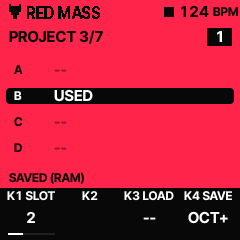
PROJECTS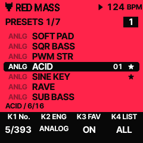
PRESET BROWSER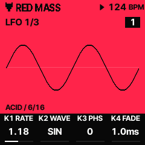
MODULATION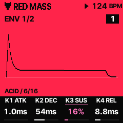
ENVELOPE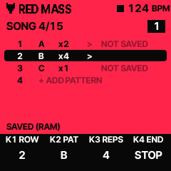
SONG MODE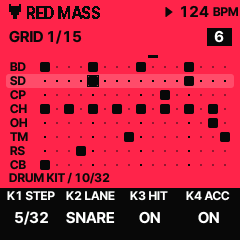
T6 DRUM GRID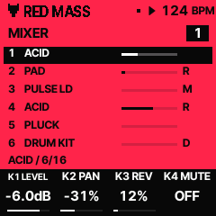
SIX-TRACK MIXER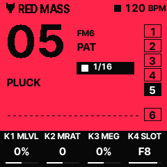
HOME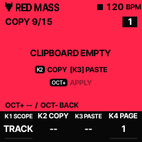
COPY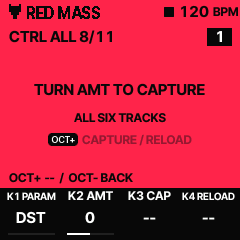
CTRL ALL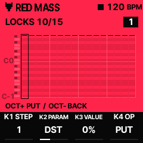
LOCKS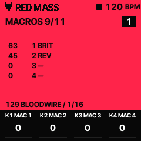
MACROS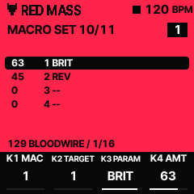
MACRO SET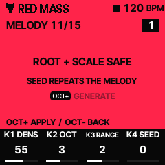
MELODY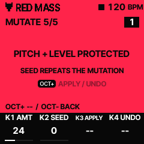
MUTATE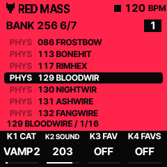
BANK 256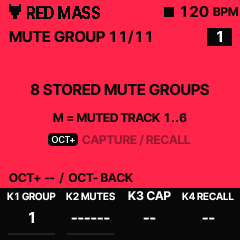
MUTE GROUP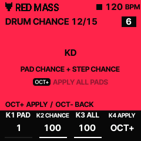
DRUM CHANCE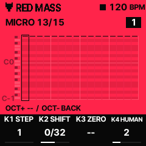
MICRO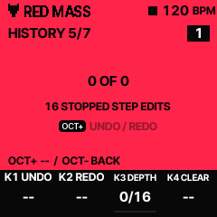
HISTORY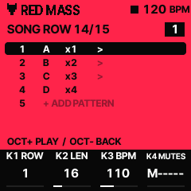
SONG ROW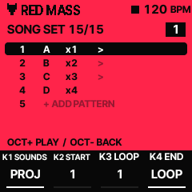
SONG SET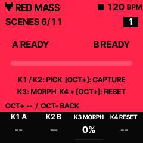
SCENES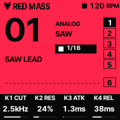
HOME: ORIGINAL BANK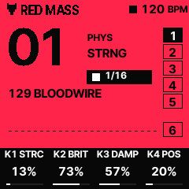
HOME: NEW BANK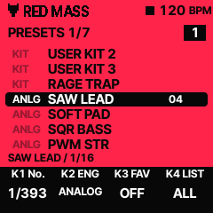
ORIGINAL PRESETS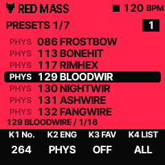
NEW PRESETS